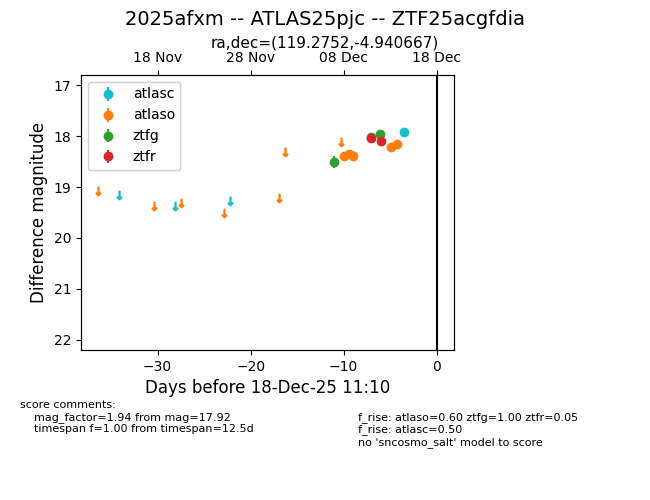
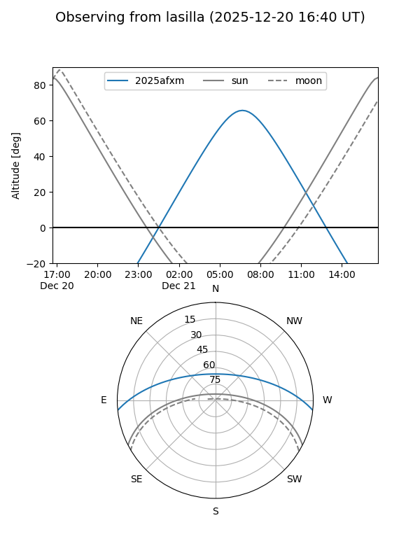
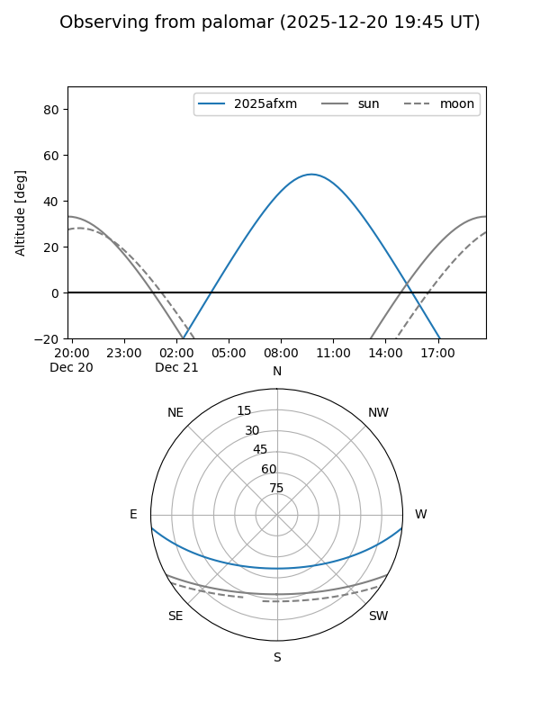

2025afxm
Target 2025afxm at 2025-12-21 11:07
Aliases and brokers:
FINK: fink-portal.org/ZTF25acgfdia
Lasair: lasair-ztf.lsst.ac.uk/objects/ZTF25acgfdia
ALeRCE: alerce.online/object/ZTF25acgfdia
TNS: wis-tns.org/object/2025afxm
YSE: ziggy.ucolick.org/yse/transient_detail/2025afxm
alt names
ZTF25acgfdia (ztf,fink_ztf)
2025afxm (tns,yse)
ATLAS25pjc (atlas)
Coordinates:
equatorial (ra, dec) = 119.2752,-4.94067
equatorial (HMS+DMS) = 07:57:06.06,-04:56:26.40
galactic (l, b) = (225.0408,+12.19911)
Flags:
Photometry:
last atlasc=17.94, atlaso=18.15, ztfg=18.19, ztfr=18.18
2 atlasc, 6 atlaso, 5 ztfg, 4 ztfr detections
Lightcurve

Visibility


Additional plots